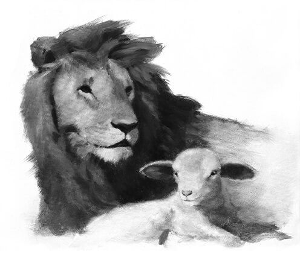

Who are the Lord’s covenant people? (30:1–2) “In all dispensations the Lord’s people have been a covenant people and have understood that without righteousness their covenants are null and void. . . . Never are such promises granted to men in wickedness. If the descendants of Abraham reject Christ they also reject the covenants that Christ made with their ancient father and no longer have claim upon them. If, on the other hand, those not of the lineage of Abraham repent and accept Christ, they become his covenant people and thus rightful heirs to all the promises made to Abraham, the father of the faithful (see Abraham 2:9–11)” (McConkie and Millet, Doctrinal Commentary, 1:353–54).
“The mariner gets his bearing from light coming from celestial bodies—the sun by day, the stars by night. . . .
“The spiritual sextant, which each of us has, also functions on the principle of light from celestial sources. Set that sextant in your mind to the word covenant or the word ordinance. The light will come through. Then you can fix your position and set a true course in life.
“No matter what citizenship or race, whether male or female, no matter what occupation, no matter your education, regardless of the generation in which one lives, life is a homeward journey for all of us, back to the presence of God in his celestial kingdom.
“Ordinances and covenants become our credentials for admission into His presence. To worthily receive them is the quest of a lifetime; to keep them thereafter is the challenge of mortality” (Packer, “Covenants,” 24).
What is the book “written to the Gentiles” that will lead people to the gospel of Jesus Christ? (30:3–5) “The coming forth of the Book of Mormon is a sign to the entire world that the Lord has commenced to gather Israel and fulfill covenants He made to Abraham, Isaac, and Jacob. . . .
“The Book of Mormon is central to this work. It declares the doctrine of the gathering. It causes people to learn about Jesus Christ, to believe His gospel, and to join His Church. In fact, if there were no Book of Mormon, the promised gathering of Israel would not occur” (Nelson, “Gathering of Scattered Israel,” 80).
Elder Bruce R. McConkie wrote: “How will the gospel be restored? Heaven and earth will unite in one grand act of grace and goodness. Revelation will commence anew; angelic ministrants will come down from the courts of glory to give keys and powers; righteousness in all its forms will come down from the Son of Righteousness. And the very earth itself will speak forth anthems of eternal praise to the King Immanuel. Righteousness from a living heaven and truth from the dead earth shall unite to proclaim the glad tidings. Men shall hear a voice from the dust, a voice of truth springing out of the earth, an account of God’s dealings with the Lehites and Jaredites, both of whom had the fulness of his everlasting gospel. The Book of Mormon—long lost to the knowledge of men; indeed, buried in the earth for more than fourteen hundred years—shall come forth proving the resurrection of that Lord who was slain on Calvary, and proving also, because he rose from the dead, that he is the Son of God whose gospel is binding upon us all.
“‘And righteousness and truth’—these two, coming from heaven above and from the earth beneath—‘will I cause to sweep the earth as with a flood,’ saith the Lord, ‘to gather out mine elect from the four quarters of the earth, unto a place which I shall prepare, an Holy City, that my people may gird up their loins, and be looking forth for the time of my coming; for there shall be my tabernacle and it shall be called Zion, a New Jerusalem’ (Moses 7:60–62). The restored gospel and the knowledge of the true God as set forth therein shall sweep the earth; this gospel and this knowledge shall cover the earth as the waters cover the mighty deep. Israel shall gather to Zion. What power will bring the Israelites from the ends if the earth to their New Jerusalem? It will be the gospel from heaven and the gospel from the dust. Note it and note it well: It is the power of the Book of Mormon that gathers Israel in the last days” (New Witness, 419–20).
How could the Nephites be called Jews? (30:4) “The word Jew was used early to refer to the citizens of the kingdom of Judah. However, later it came to refer to all those who were descendants of Judah. . . . Still later the term came to mean essentially ‘anyone of the House of Israel who remained in the kingdom of Judah . . . after the time of the scattering of the Ten Tribes.’ Thus at the time of the Babylonian captivity . . . even descendants of the other tribes, including Ephraim and Manasseh, were considered by some to be Jews if they were of the house of Israel living in Jerusalem. Thus, Nephi refers to himself and his descendants as being ‘of the Jews’” (Ludlow, “Message to the Jews,” 242).
Why was “white” changed to “pure”? (30:6) “Prior to the 1981 edition of the Book of Mormon, 2 Nephi 30:6 read ‘they [the Lamanites] shall be a white and delightsome people.’ The change to a ‘pure and delightsome people’ is traced to the 1840 edition made under the editorial supervision of the Prophet Joseph Smith. However, for some unknown reason, subsequent editions reverted to the first wording. This background was called to the attention of the First Presidency and the Twelve with the recommendation that the word ‘pure’ be used in the 1981 edition. These modern-day prophets, seers, and revelators unanimously approved the change as a better expression of the correct meaning of the verse” (Nyman, “Come to Understanding and Learn Doctrine,” 33).
“Instead of ‘white and delightsome,’ as in most earlier editions, the 1981 edition uses ‘pure and delightsome,’ in reference to future Lamanite generations. The printer’s copy says ‘white.’ Unfortunately, the remaining portion of the original dictated manuscript does not include this scripture. The 1830 and 1837 editions of the Book of Mormon, based on the printer’s copy, also say ‘white.’ However, the 1840 edition, which was ‘carefully’ revised by the Prophet Joseph Smith, uses ‘pure’ in place of ‘white.’ All subsequent editions have reverted to ‘white’ probably because the 1852 edition (the next after the 1840) was based on the 1837 edition rather than on the 1840. In the process of arranging the 1981 edition the committee presented all of the textual corrections along with the reason for each proposed correction to the First Presidency and the Twelve for approval. The decision to use ‘pure’ in this passage was made not on the basis of the original manuscripts (as were most other cases) but on the 1840 revision by the Prophet Joseph Smith and the judgment of living prophets. This correction does not negate the concept that future generations of Lamanites will become white, but it removes the concept that one has to be white to be delightsome to the Lord” (Matthews, “New Publications of the Standard Works—1979, 1981,” 398–99).
When will the Jews begin to believe and gather? (30:7–8) “The Jews ‘shall begin to believe in Christ’ before he comes the second time. Some of them will accept the gospel and forsake the traditions of their fathers; a few will find in Jesus the fulfillment of their ancient Messianic hopes; but their nation as a whole, their people as the distinct body that they now are in all nations, the Jews as a unit shall not, at that time, accept the word of truth. But a beginning will be made; a foundation will be laid; and then Christ will come and usher in the millennial year of his redeemed” (McConkie, Millennial Messiah, 228–29).
“As all the world knows, many Jews are now gathering to Palestine, where they have their own nation and way of worship, all without reference to a belief in Christ or an acceptance of the laws and ordinances of his everlasting gospel. Is this the latter-day gathering of the Jews of which the scriptures speak? No! It is not; let there be no misunderstanding in any discerning mind on this point. This gathering of the Jews to their homeland, and their organization into a nation and a kingdom, is not the gathering promised by the prophets. It does not fulfill the ancient promises. Those who have thus assembled have not gathered into the true Church and fold of their ancient Messiah. They have not received again the saving truths of that very gospel which blessed Moses their lawgiver, and Elijah their prophet, and Peter, James, and John, whom their fathers rejected.
“This gathering of the unconverted to Palestine—shall we not call it a political gathering based on such understanding of the ancient word as those without the guidance of the Holy Spirit can attain, or shall we not call it a preliminary gathering brought to pass in the wisdom of him who once was their God?—this gathering, of those whose eyes are yet dimmed by scales of darkness and who have not yet become the delightsome people it is their destiny to be, is nonetheless part of the divine plan. It is Elias going before Messias; it is a preparatory work; it is the setting of the stage for the grand drama soon to be played on Olivet. A remnant of the once-chosen people must be at the proper place, at the appointed time, to fulfill that which aforetime has been promised relative to the return of the Crucified One to the people who once chanted, in a delirious chorus, as Pilate sought to free him at the fourth Passover, ‘Crucify him, crucify him.’
“Seated on the Mount of Olives, surrounded by the Twelve, in the Olivet Discourse Jesus said of his glorious return: ‘And the remnant’—those Jews who have come out of the nations of the earth to live again in the land of Judah—‘shall be gathered unto this place.’ This place is Palestine; it is Jerusalem; it is the Mount of Olives on the east of the holy city. ‘And then they shall look for me, and, behold, I will come; and they shall see me in the clouds of heaven, clothed with power and great glory; with all the holy angels’ (D&C 45:43–44). This coming—and there will be many appearances which taken together comprise the second coming of the Son of Man. . . .
“The holy word that has come to us speaks of that day in these words: ‘And then shall the Jews look upon me and say: What are these wounds in thine hands and in thy feet? Then shall they know that I am the Lord; for I will say unto them: These wounds are the wounds with which I was wounded in the house of my friends. I am he who was lifted up. I am Jesus that was crucified. I am the Son of God’ (D&C 45:51–52).
“And thus cometh the day of the conversion of the Jews. It is a millennial day, a day after the destruction of the wicked, a day when those who remain shall seek the Lord and find his gospel. And, for that matter, so shall it be with reference to the gathering and triumph of all Israel. What we do now in preparation for the Second Coming is but a prelude. The great day of gathering and glory lies ahead. It will be in that age when men beat their swords into plowshares and their spears into pruning hooks, and there is peace in all the earth” (McConkie, Millennial Messiah, 229–31).
How will the Lord cause “a great division among the people”? (30:9–10) “Eventually all must choose; all must either accept the Christ testified of in the Book of Mormon or reject him. There is no other Christ, and where Christ is concerned there is no middle ground” (McConkie and Millet, Doctrinal Commentary, 1:358).
This prophesied separation is spoken of many times in scripture. Read the following verses and ponder what attitudes and actions separate the righteous from the wicked: Alma 10:22–23; 3 Nephi 21:11; Doctrine and Covenants 1:14; 45:56–57, 64–70; 64:23–24; Moses 7:18; 8:28–30. As you are reading, what does the Spirit encourage you to do?
“I testify that wickedness is rapidly expanding in every segment of our society (see D&C 1:14–16, 84:49–53). It is more highly organized, more cleverly disguised, and more powerfully promoted than ever before. Secret combinations lusting for power, gain, and glory are flourishing. A secret combination that seeks to overthrow the freedom of all lands, nations, and countries is increasing its evil influence and control over America and the entire world (see Ether 8:18–25).
“I testify that the church and kingdom of God is increasing in strength. Its numbers are growing, as is the faithfulness of its faithful members. It has never been better organized or equipped to perform its divine mission.
“I testify that as the forces of evil increase under Lucifer’s leadership and as the forces of good increase under the leadership of Jesus Christ, there will be growing battles between the two until the final confrontation. As the issues become clearer and more obvious, all mankind will eventually be required to align themselves either for the kingdom of God or for the kingdom of the devil. As these conflicts rage, either secretly or openly, the righteous will be tested. God’s wrath will soon shake the nations of the earth and will be poured out on the wicked without measure (see Joseph Smith–History 1:45, D&C 1:9). But God will provide strength for the righteous and the means of escape; and eventually and finally truth will triumph (see 1 Nephi 22:15–23)” (Benson, “I Testify,” 87).
What does “girdle of his loins” mean? (30:11) “The Lord is clothed in righteousness and faithfulness; these two qualities represent his very existence. . . . The Lord girds his loins with righteousness as he prepares to do his important work. The loins symbolize the creative powers (Gen. 35:11; 1 Kgs. 8:19; Acts 2:30). These items of clothing, the girdle of the loins and the sash around the waist, are also suggestive of temple ordinances” (Parry et al., Understanding Isaiah, 118).
What will bring about this change in nature? (30:12–15) “The peace that will exist among all creatures on the earth is exciting. Flesh-eating and plant-eating animals will be at peace with each other, because all living creatures in that day will be herbivorous, as they were in the Garden of Eden. Truly, ‘the wolf also shall dwell with the lamb, and the leopard shall lie down with the kid; and the calf and the young lion and the fatling together; and a little child shall lead them’ (Isa. 11:6; see also 11:6–9; Abr. 4:29–30; D&C 101:26, 29)” (Meservy, “God Is with Us,” 101).
© Clint Clearly/Shutterstock.
“Both the nursing infant and the weaned toddler are completely helpless in the face of danger, but during the Millennium, both will be able to play at the asp (possibly the cobra) and the cockatrice’s (possibly the viper’s) dens, for poisonous snakes that once harmed and destroyed will be harmless. The curse between the seed of the woman (the child) and the serpent (Gen. 3:15) will be gone. The serpents here call to mind ‘that old serpent, called the Devil, and Satan’ (Rev. 12:9), whose intent it is to harm and destroy the souls of mankind. Satan, however, will be bound during the Millennium, with all of his angels, so that peaceful conditions can hold sway” (Parry et al., Understanding Isaiah, 120).
“Though this passage may have literal fulfillment in the animal kingdom, its figurative meaning is much more beautiful. No longer will the great powers prey upon the defenseless ones—no more invasions, attacks, and conquests. The great nations will live in peace with the smaller ones. The harmless innocence of children will lead, and not the brutality of warriors, generals, and champions. The children will no longer learn war from the hatred of their parents, as we see in the Middle East and numerous other battlefields of the nations. The children will be at peace.
“What will bring about this greatest of all victories? The answer is given: the knowledge of the Lord, which will cover the earth ‘as the waters cover the sea.’ The testimony of Jesus, preached by missionaries throughout the world, will in time turn the key. Lucifer will be expelled ‘in the name of Jesus Christ.’ The missionaries of this church are striking at the heart of the beast. With each proselytizing success, the claws and teeth and horns grow weaker. The king of this new, never-ending dominion will not be called ‘the Great’ or ‘the Terrible,’ as have other conquering rulers. His titles will include ‘Wonderful, Counsellor, The mighty God, The everlasting Father, The Prince of Peace’ (Isaiah 9:6)” (Wilcox, Who Shall Be Able to Stand?, 187).
What more will be revealed in the Millennium? (30:16–18) “The sealed part of the Book of Mormon will come forth; the brass plates will be translated; the writings of Adam and Enoch and Noah and Abraham and prophets without number will be revealed. We shall learn a thousand times more about the earthly ministry of the Lord Jesus than we now know. We shall learn great mysteries of the kingdom that were not even known to those of old who walked and talked with the Eternal One. We shall learn the details of the creation and the origin of man” (McConkie, Millennial Messiah, 676).
“Nothing in or on or over the earth will be withheld from human ken, for eventually man, if he is to be as his Maker, must know all things.
“Hear in this connection these words of Nephi: In that day, ‘the earth shall be full of the knowledge of the Lord as the waters cover the sea. Wherefore, the things of all nations shall be made known; yea, all things shall be made known unto the children of men. There is nothing which is secret save it shall be revealed; there is no work of darkness save it shall be made manifest in the light; and there is nothing which is sealed upon the earth save it shall be loosed. Wherefore, all things which have been revealed unto the children of men shall at that day be revealed’ (2 Ne. 30:15–18). Surely man could not ask for more than this in the way of light and truth and knowledge, and yet expect to remain in the flesh as a mortal and be in process of working out his salvation. Surely this is the day in which the Lord shall fulfill the promise of holy writ that says: ‘God shall give unto you knowledge by his Holy Spirit, yea, by the unspeakable gift of the Holy Ghost, [knowledge] that has not been revealed since the world was until now; which our forefathers have awaited with anxious expectation to be revealed in the last times, which their minds were pointed to by the angels, as held in reserve for the fulness of their glory; a time to come in the which nothing shall be withheld, whether there be one God or many gods, they shall be manifest’ (D&C 121:26–28). That this outpouring of divine goodness has already commenced is not open to question. That it will continue, in far greater measure, after our Lord comes again, who can doubt?” (McConkie, Millennial Messiah, 676–77).
